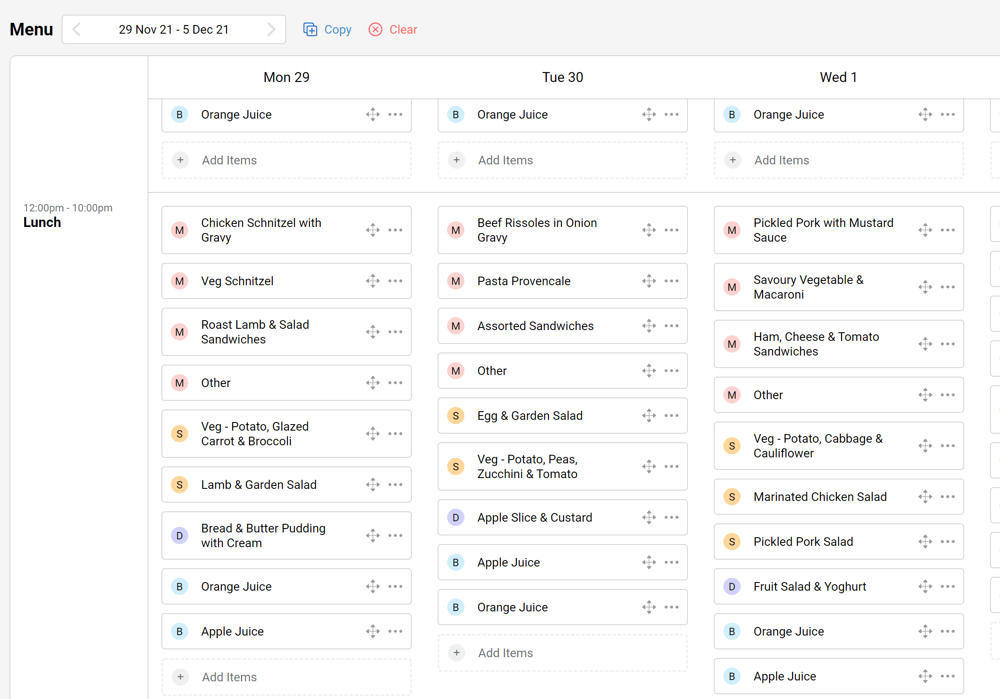
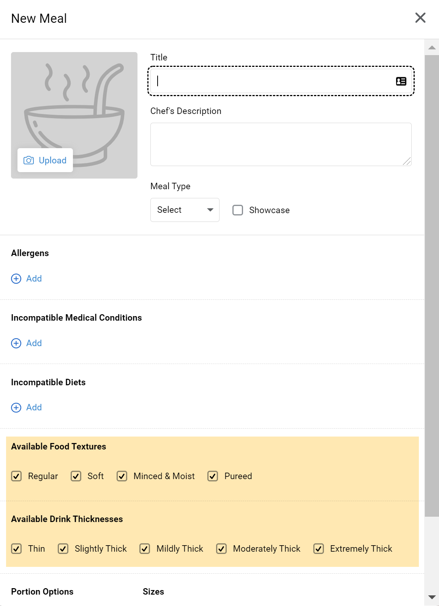

What’s new in release 2021.9
This is another big release with our long awaited feature: TV menu boards! Below are the details of all the changes.
Embrayse TV menu boards
Tired of writing up lunch and dinner menus on a whiteboard every day? Want to get your residents excited not only about upcoming meals, but also special events? Embrayse TV is one of our most exciting new features which will enable you to set up menu boards in any number of locations around your facility. Beautifully designed menus will automatically be displayed for the next 2 or 3 services, without any extra effort on your part. You can even upload posters of upcoming events, or just fun photos for residents which will be periodically displayed.
To get set up with TV menu boards, please reach out to your Embrayse contact.
Changes to Showcased items
With the introduction of TV menus, we have also made some changes to the Showcased checkbox on dishes. Previously this checkbox indicated whether a photo will be displayed for the item. We now always show a photo as long as it has been uploaded, regardless of whether Showcased is checked. Instead, this checkbox now indicates whether the dish will be displayed on TV menu boards. For example, you may want to showcase your mains and desserts, but not drinks or some sides.
Re-ordering items
You now have the ability to re-order menu items for any given service, on the menu planning screen. This order is reflected in two locations: firstly it is the order in which the items will appear when your team is placing orders. This is useful as you can put your main (default) option first and your staff will know that's the option to pick if a resident is unable to make their own choice. The ordering is also reflected in TV menu boards.
Enhanced food and drink texture options
Food and drink consistency is an important part of the dietary needs of aged care residents. Certain foods, such as ice-cream or jelly, can impact residents who are on a thickened fluid diet. For this reason all dishes now allow you to specify both food and drink consistencies that that dish is available for. By default, when you create a new dish, all textures and thicknesses are now checked as being available. You can uncheck any texture that it's not compatible with.
Portion sizes on dockets
We are always looking for ways to improve the readability of the printed dockets. You can now see the size of an ordered item immediately in front of the count, rather than at the end of the line item. For example:
- 1xS
- 2xM
PCS photos and other integration improvements
If you are currently using the integration with PCS clinical system you will notice that the resident
photos will start appearing in Embrayse. This will help with identifying residents and saves you from
uploading photo in two places. Please note that resident photos are synchronised once every 24 hours.
Other information such as name and room number will continue to be synchronised every 15 minutes.
In addition, we no longer create notifications when a resident's away status is changed in PCS, to reduce
the amount of noise. Notifications will still be created whenever a resident's name or room number changes
in PCS.